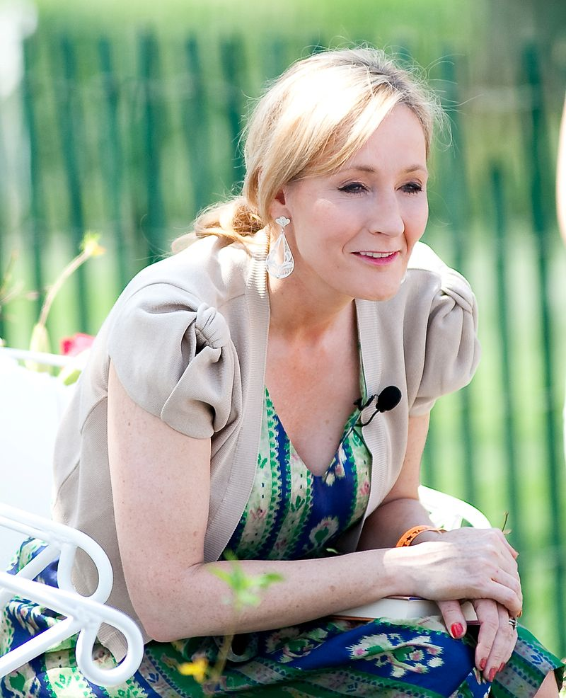

Best Authors Ever!!
By: Rakhitha Wimalaweera
1.William Shakespeare
/Shakespeare.jpg)
William Shakespeare (bapt. 26 April 1564 – 23 April 1616)[a] was an English playwright, poet, and actor, widely regarded as the greatest writer in the English language and the world's greatest dramatist.
He is often called England's national poet and the "Bard of Avon" (or simply "the Bard"). His extant works, including collaborations, consist of some 39 plays,[c] 154 sonnets, two long narrative poems, and a few other verses, some of uncertain authorship. His plays have been translated into every major living language and are performed more often than those of any other playwright.
They also continue to be studied and reinterpreted.
Shakespeare was born and raised in Stratford-upon-Avon, Warwickshire. At the age of 18, he married Anne Hathaway, with whom he had three children: Susanna and twins Hamnet and Judith.
Sometime between 1585 and 1592, he began a successful career in London as an actor, writer, and part-owner of a playing company called the Lord Chamberlain's Men, later known as the King's Men.
At age 49 (around 1613), he appears to have retired to Stratford, where he died three years later. Few records of Shakespeare's private life survive; this has stimulated considerable speculation about such matters as his physical appearance, his sexuality, his religious beliefs, and whether the works attributed to him were written by others.
Shakespeare produced most of his known works between 1589 and 1613. His early plays were primarily comedies and histories and are regarded as some of the best work produced in these genres.
Until about 1608, he wrote mainly tragedies, among them Hamlet, Romeo and Juliet, Othello, King Lear, and Macbeth, all considered to be among the finest works in the English language.
In the last phase of his life, he wrote tragicomedies (also known as romances) and collaborated with other playwrights.
Many of Shakespeare's plays were published in editions of varying quality and accuracy in his lifetime.
However, in 1623, two fellow actors and friends of Shakespeare's, John Heminges and Henry Condell, published a more definitive text known as the First Folio, a posthumous collected edition of Shakespeare's dramatic works that included all but two of his plays
2.J.K.Rowling

Rowling, is a British author, screenwriter, producer, and philanthropist. She is best known for writing the Harry Potter fantasy series, which has won multiple awards and sold more than 500 million copies, becoming the best-selling book series in history.
The books are the basis of a popular film series, over which Rowling had overall approval on the scripts and was a producer on the final films.
She also writes crime fiction under the pen name Robert Galbraith.
Born in Yate, Gloucestershire, Rowling was working as a researcher and bilingual secretary for Amnesty International when she conceived the idea for the Harry Potter series while on a delayed train from Manchester to London in 1990.
The seven-year period that followed saw the death of her mother, birth of her first child, divorce from her first husband, and relative poverty until the first novel in the series, Harry Potter and the Philosopher's Stone, was published in 1997.
There were six sequels, of which the last, Harry Potter and the Deathly Hallows, was released in 2007. Since then, Rowling has written five books for adult readers: The Casual Vacancy (2012) and—under the pseudonym Robert Galbraith—the crime fiction Cormoran Strike series, which consists of The Cuckoo's Calling (2013), The Silkworm (2014), Career of Evil (2015), and Lethal White (2018).[8] Between 26 May and 10 July 2020, her "political fairytale" for children, The Ickabog, was released in instalments in an online version
3.Leo Tolstoy
English as Leo Tolstoy, was a Russian writer who is regarded as one of the greatest authors of all time.
He received multiple nominations for the Nobel Prize in Literature every year from 1902 to 1906 and nominations for Nobel Peace Prize in 1901, 1902 and 1910 and the fact that he never won is a major Nobel prize controversy.
Born to an aristocratic Russian family in 1828, he is best known for the novels War and Peace (1869) and Anna Karenina (1877), often cited as pinnacles of realist fiction.
He first achieved literary acclaim in his twenties with his semi-autobiographical trilogy, Childhood, Boyhood, and Youth (1852–1856), and Sevastopol Sketches (1855), based upon his experiences in the Crimean War. Tolstoy's fiction includes dozens of short stories and several novellas such as The Death of Ivan Ilyich (1886), Family Happiness (1859), and Hadji Murad (1912). He also wrote plays and numerous philosophical essays.
In the 1870s Tolstoy experienced a profound moral crisis, followed by what he regarded as an equally profound spiritual awakening, as outlined in his non-fiction work A Confession (1882).
His literal interpretation of the ethical teachings of Jesus, centering on the Sermon on the Mount, caused him to become a fervent Christian anarchist and pacifist.[3] Tolstoy's ideas on nonviolent resistance, expressed in such works as The Kingdom of God Is Within You (1894), had a profound impact on such pivotal 20th-century figures as Mahatma Gandhi[9] and Martin Luther King Jr.[10] Tolstoy also became a dedicated advocate of Georgism, the economic philosophy of Henry George, which he incorporated into his writing, particularly Resurrection (1899).